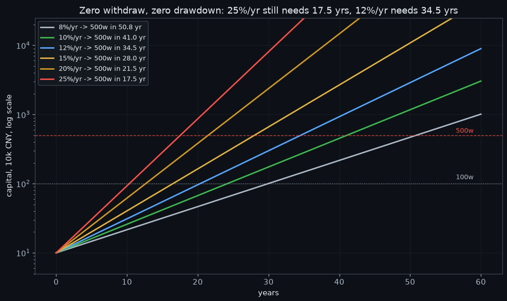
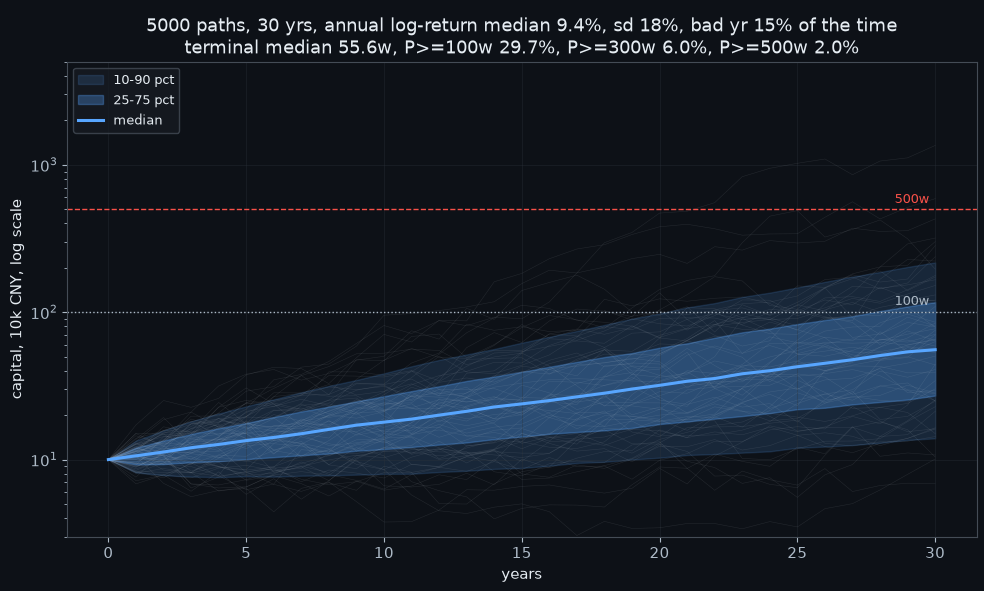
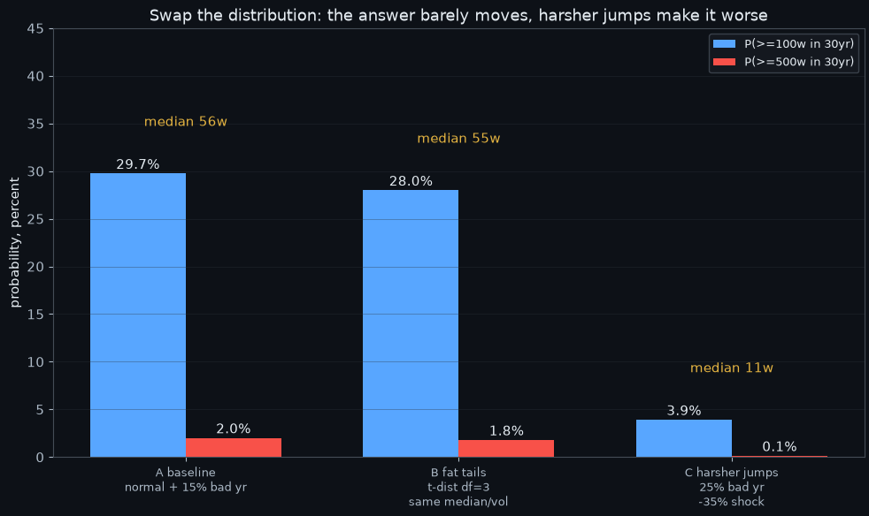
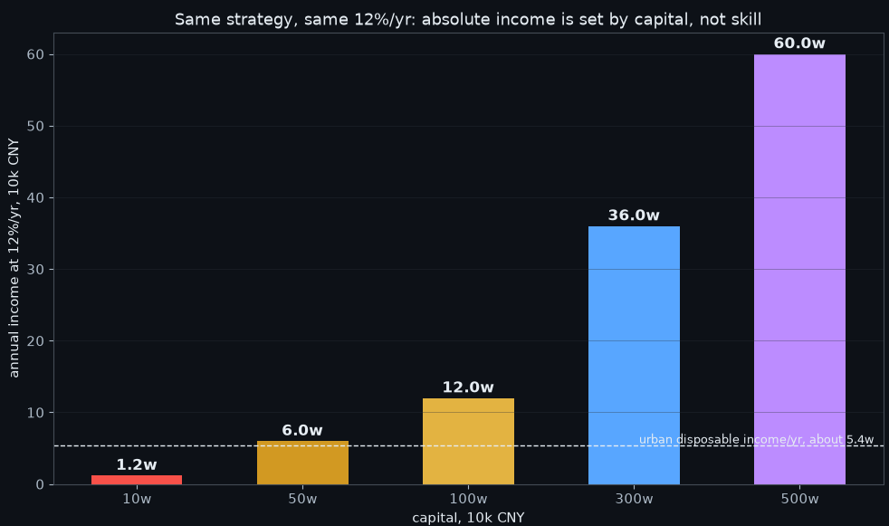

10万本金，每年15%，30年后是662.1万？这笔账算得倒是很快，但前提是两件事同时成立，每年真的做到15%，和坚持30年。我们知道有一个收租型的工具叫Wheel，卖期权收租，跌了接货换个姿势继续收，涨了货被收走回到现金。它到底能不能把10万滚成500万多万，我把它从头到尾测了一遍，四张图，看完你心里就有数。老样子代码放文末，感兴趣的自取。
Wheel一轮四步。手里拿现金，卖出看跌期权，行话叫卖put，收一笔权利金。价格跌到行权价，合约被行权，现金换成ETF，行话叫接货。拿着ETF卖出看涨期权，行话叫卖call，继续收权利金。价格涨过行权价，ETF被按约定价买走，回到现金。像车轮一样转圈，所以叫Wheel，也有人叫车轮策略。
一，这台车最快开多快
国内做Wheel的载体是300ETF和50ETF期权。一张300ETF合约名义大约4万，卖一张虚值put保证金5000到6000，近月权利金每月几百块不等，越接近平值越厚，佣金来回按2元一张边算，在500块权利金上占0.8%。
把权利金、接货的机会成本、上行被封顶的机会成本全算进去，国内Wheel的长期年化现实带在8%到15%。注意这按总资金计算，空仓闲置全折算在内。12%已是优秀水平。下面的测算就从15%的天花板出发。
图1

图中六条收益率线从8%到25%，10万到500万分别要50.8年、41.0年、34.5年、28.0年、21.5年、17.5年。
图1是零回撤零提取的理想复利，纵轴是对数刻度，直线代表增速恒定。结论很直白，15%要28年，20%要21.5年，25%要17.5年。25%年化维持17年不失效，是巴菲特级别的长期战绩，他长期年化也就20%附近。你以为15%是起点，其实它是天花板。而天花板上的28年，前提还是一次回撤都没有。真实市场没有这种事，所以往下走。
二，把波动放进来
图2

图中5000条路径30年，终值中位55.6万，破100万概率29.7%，破300万6.0%，破500万2.0%。赢家中位在第28年才摸到500万线，这个数图上放不下，写在这里。
口径咱们先说清。年粒度仿真，单年中位数年增9.4%，年波动18%，每年15%概率叠一次约负20%的坏年冲击，相当于每六七年挨一次2022年4月那种行情。
这里藏着一个最容易踩的坑。12%的账面收益放进18%的波动里，先被波动拖累磨掉约1.6个点，再被坏年冲击的期望磨掉3个多百分点，落到30年长期复利上，每年只剩5%到6%。图2那条中位曲线的斜率就是这个数，10万变55.6万，等价年化5.9%。图1的12%和图2实际跑出来的5.9%之间的差，就是波动的全部价码。
30年结局是终值中位55.6万，破500万概率2.0%，而且那2%的赢家，中位也要等28年。
三，跳跃环境
你可能会问，万一跳跃环境呢？我们直接换分布重跑。
图3

图中A组基准中位55.6万，B组换成t分布肥尾中位54.9万几乎没动，C组坏年加重到25%概率负35%冲击，中位掉到11.0万。
B组把正态换成自由度3的t分布，一句话说就是两侧尾巴更肥的随机世界，好年坏年都更容易出现极端值，但中位增速和波动保持不变。结果中位54.9万、破100万28.0%，和基准几乎重合。C组不动形态，把坏年概率提到25%、冲击加深到负35%，中位只剩11.0万，破500万概率0.1%。两层意思，分布形态随便换，答案纹丝不动，因为决定长期复利的是中位增速和坏年频率，不是曲线光不光滑。但如果你怀疑市场比模型更残酷，你是对的，跳跃环境只会更惨，不会救活这台车。
四，扎心的一道门槛
图4

图中同样12%年化，10万本金一年1.2万，100万12.0万，500万60.0万，虚线是城镇人均可支配收入约5.4万。
同样是12%，10万本金一年赚1.2万，不到城镇人均可支配收入5.4万的四分之一。策略负责收益率，本金负责绝对增速，10万到30万这段路自己滚要将近十年，这期间它对生活的贡献接近零。Wheel在小资金阶段是练手机器，不是翻身机器。
五，晒出来的净值曲线，先过三道安检
我知道你总会在网上刷到各种所谓的晒Wheel达到财富自由的净值曲线。看之前过三道安检：
1、幸存者偏差。图2里30年站上100万线的路径不到三成，晒出来的那条，是这条已经收窄的分布里更靠右的尾部。没人晒爆仓账户，但两类账户用的是同一个策略。
2、口径魔术。起算点挑在大跌后、头一年上杠杆、只卖put不接货、拿一年好行情年化外推30年，任何一条都能造出25%的观感。三个问题戳穿，起算点哪天，有没有杠杆，有没有完整接货段。
3、动机。也许所谓曲线是广告不是业绩，变现端通常是课程、社群或者拉你开户。真实卖方账户一定有接货回撤段，例如做国内ETF期权的，2022年4月、2024年2月那种月份在曲线上看得见，光滑得没有回撤的卖方曲线本身就该扣分。只认有时间戳的券商对账单。
六，普通人该怎么办
如果刚毕业，你最大的资产是30年时间和工资现金流，最小的是本金。10万以下别跟收益率较劲，用最小合约单位把Wheel四个环节的坑踩完，接货、上行被封顶、扛单不止损、保证金吃紧，几百块学费足够。30岁前把本金从10万做到50万，比把年化从12%做到20%可行得多。账算给你，10万本金年化12%，每年追加5万，七年后约72万，纯滚10万永远到不了这个速度。
人到中年，时间是越用越少的资产，错了没有再来30年的机会。Wheel的角色是防守收益结构，不是进攻赌具，仓位含接货敞口压在可投资产三成以下，把它当12%上下浮动的现金流机器。中年人真正的风险不是错过财富自由，是一次40%的回撤之后没有时间修复。
七，答案自己算
财富自由等于本金乘上一加收益率的n次方。Wheel能稳定供给的只有收益率这一个变量，还有上限。剩下两个在你的工资条和耐心里。Wheel给不了你财富自由，但它能在你变富的路上，负责不拖后腿。python代码文末都给你们了，答案你现在自己有数。
import math
import numpy as np
import matplotlib.pyplot as plt
# 背景颜色设置
BG = "#0d1117"
PANEL = "#161b22"
INK = "#e6edf3"
MUTED = "#adbac7"
GRID = "#2d333b"
RED = "#f85149"
GREEN = "#3fb950"
CYAN = "#58a6ff"
ORANGE = "#d29922"
PURPLE = "#bc8cff"
YELLOW = "#e3b341"
plt.rcParams.update({
"figure.facecolor": BG,
"axes.facecolor": BG,
"axes.edgecolor": "#444c56",
"axes.labelcolor": INK,
"axes.linewidth": 0.8,
"text.color": INK,
"xtick.color": MUTED,
"ytick.color": MUTED,
"grid.color": GRID,
"grid.linewidth": 0.6,
"grid.alpha": 0.7,
"legend.facecolor": PANEL,
"legend.edgecolor": "#444c56",
"legend.labelcolor": INK,
"font.size": 11,
})
# 参数设置
START = 100_000.0
TARGET_FREE = 5_000_000.0
TARGET_MID = 1_000_000.0
N_PATH = 5000
N_YR = 30
# 图1
fig1, ax = plt.subplots(
figsize=(10, 6))
rates = [0.08, 0.10,
0.12, 0.15, 0.20, 0.25]
colors = [MUTED, GREEN,
CYAN, YELLOW, ORANGE, RED]
years = np.arange(0, 61)
for r, c in zip(rates, colors):
path = START * (
1 + r) ** years
n = math.log(
TARGET_FREE / START) / \
math.log(1 + r)
ax.plot(years, path / 1e4,
color=c, lw=2,
label=str(
int(r * 100)
) + "%/yr -> 500w in "
+ ("%.1f" % n)
+ " yr")
ax.axhline(TARGET_FREE / 1e4,
color=RED, ls="--",
lw=1, alpha=0.8)
ax.axhline(TARGET_MID / 1e4,
color=MUTED, ls=":",
lw=1, alpha=0.8)
ax.text(59, TARGET_FREE /
1e4 * 1.09, "500w",
color=RED, ha="right",
fontsize=9)
ax.text(59, TARGET_MID /
1e4 * 1.16, "100w",
color=MUTED, ha="right",
fontsize=9)
ax.set_yscale("log")
ax.set_ylim(5, 2.5e4)
ax.set_xlabel("years")
ax.set_ylabel("capital, "
"10k CNY, log scale")
ax.set_title(
"Zero withdraw, zero drawdown:"
" 25%/yr still needs 17.5 yrs,"
" 12%/yr needs 34.5 yrs")
ax.legend(loc="upper left",
fontsize=9)
ax.grid(True, alpha=0.4)
fig1.tight_layout()
rng = np.random.default_rng(20261015)
def run_mc(mu_ln, sig_ln,
p_jump, jump_ln,
heavy_tailed=False, df=3):
if heavy_tailed:
base = rng.standard_t(
df, size=(N_PATH, N_YR))
base = base / math.sqrt(
df / (df - 2)) * sig_ln \
+ mu_ln
else:
base = rng.normal(
mu_ln, sig_ln,
size=(N_PATH, N_YR))
jm = rng.random(
(N_PATH, N_YR)) < p_jump
lr = np.where(jm, base
+ jump_ln, base)
return START * np.exp(
np.cumsum(lr, axis=1))
paths0 = np.hstack([np.full(
(N_PATH, 1), START), run_mc(
0.09, 0.18, 0.15, -0.22)])
# 图2
fig2, ax = plt.subplots(figsize=(10, 6))
yr_axis = np.arange(0, N_YR + 1)
band_lo = np.percentile(
paths0, 10, axis=0) / 1e4
band_hi = np.percentile(
paths0, 90, axis=0) / 1e4
med = np.percentile(
paths0, 50, axis=0) / 1e4
q25 = np.percentile(
paths0, 25, axis=0) / 1e4
q75 = np.percentile(
paths0, 75, axis=0) / 1e4
for i in range(60):
ax.plot(yr_axis,
paths0[i] / 1e4, color=INK,
lw=0.4, alpha=0.10)
ax.fill_between(yr_axis, band_lo,
band_hi, color=CYAN,
alpha=0.15,
label="10-90 pct")
ax.fill_between(yr_axis, q25,
q75, color=CYAN,
alpha=0.30,
label="25-75 pct")
ax.plot(yr_axis, med,
color=CYAN, lw=2.2, label="median")
ax.axhline(TARGET_FREE / 1e4,
color=RED, ls="--", lw=1)
ax.axhline(TARGET_MID / 1e4,
color=MUTED, ls=":", lw=1)
ax.text(29.8, TARGET_FREE /
1e4 * 1.1, "500w", color=RED,
ha="right", fontsize=9)
ax.text(29.8, TARGET_MID /
1e4 * 1.12, "100w", color=MUTED,
ha="right", fontsize=9)
ax.set_yscale("log")
ax.set_ylim(3, 5e3)
ax.set_xlabel("years")
ax.set_ylabel(
"capital, 10k CNY, log scale")
ax.set_title(
"5000 paths, 30 yrs, annual"
" log-return median 9.4%, sd 18%, "
"bad yr 15% of the time\n"
"terminal median 55.6w, "
"P>=100w 29.7%, P>=300w 6.0%,"
" P>=500w 2.0%")
ax.legend(loc="upper left", fontsize=9)
ax.grid(True, alpha=0.4)
fig2.tight_layout()
# 图3
scenarios = [
("A baseline\nnormal + "
"15% bad yr", paths0),
("B fat tails\nt-dist "
"df=3\nsame median/vol",
run_mc(0.09, 0.18, 0.15,
-0.22, heavy_tailed=True)),
("C harsher jumps\n25%"
" bad yr\n-35% shock",
run_mc(0.09, 0.18, 0.25, -0.35)),
]
labels4 = [s[0] for s
in scenarios]
p100 = [100 * np.mean(
s[1][:, -1] >= TARGET_MID)
for s in scenarios]
p500 = [100 * np.mean(
s[1][:, -1] >= TARGET_FREE)
for s in scenarios]
meds = [np.median(
s[1][:, -1]) / 1e4 for
s in scenarios]
fig3, ax = plt.subplots(
figsize=(10, 6))
x = np.arange(3)
w = 0.35
b1 = ax.bar(x - w / 2, p100,
width=w, color=CYAN,
label="P(>=100w in 30yr)")
b2 = ax.bar(x + w / 2, p500,
width=w, color=RED,
label="P(>=500w in 30yr)")
for b, v in zip(b1, p100):
ax.text(b.get_x() +
b.get_width() / 2, v + 0.5,
"%.1f%%" % v, ha="center",
color=INK, fontsize=11)
for b, v in zip(b2, p500):
ax.text(b.get_x() +
b.get_width() / 2, v + 0.5,
"%.1f%%" % v, ha="center",
color=INK, fontsize=11)
for i, m in enumerate(meds):
ax.text(i, max(p100[i],
p500[i]) + 5.0,
"median %.0fw" % m,
ha="center", color=YELLOW,
fontsize=11)
ax.set_xticks(x)
ax.set_xticklabels(labels4,
fontsize=9)
ax.set_ylabel(
"probability, percent")
ax.set_ylim(0, 45)
ax.set_title("Swap the "
"distribution: "
"the answer "
"barely moves,"
" harsher jumps "
"make it worse")
ax.legend(loc="upper right",
fontsize=9)
ax.grid(True, axis="y", alpha=0.4)
fig3.tight_layout()
# 图4
fig4, ax = plt.subplots(
figsize=(10, 6))
capitals = np.array(
[10, 50, 100, 300, 500]) * 1e4
abs_income = capitals * 0.12 / 1e4
income_ref = 5.4
bar_colors = [
RED, ORANGE, YELLOW, CYAN, PURPLE]
bars = ax.bar([str(
int(c / 1e4)) + "w" for c
in capitals],
abs_income,
color=bar_colors,
width=0.55)
ax.axhline(income_ref,
color=INK, ls="--", lw=1)
ax.text(4.45, income_ref * 1.05,
"urban disposable "
"income/yr, about 5.4w",
color=INK, ha="right",
fontsize=9)
for b, v in zip(bars, abs_income):
ax.text(b.get_x() +
b.get_width() / 2,
v + 0.8, "%.1fw" % v,
ha="center", color=INK,
fontsize=12,
fontweight="bold")
ax.set_xlabel(
"capital, 10k CNY")
ax.set_ylabel(
"annual income "
"at 12%/yr, 10k CNY")
ax.set_title(
"Same strategy, same 12%/yr:"
" absolute income is set by "
"capital, not skill")
ax.grid(True, axis="y", alpha=0.4)
fig4.tight_layout()
plt.show()